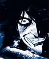

Les Terres de Kirin Tor
Balmon
Points : 8

Joué par :
[ Information masquée ]
Age : 24
Lieu de naisance : Stratholme
Signe de naissance : Lapin
Sexe : Homme
Race : Humain
Faction : Alliance
Formation : Démoniste
Niveau : 60
Guilde :
Artisanat 1 : Couturier
Artisanat 2 : Dépeceur
Envoyer un MP
Description : Orphelin ,découvert à Stratholme dans un coin d'une ruelle ,il avait échapper à la bataille entre le Fléau et l'Alliance. Il fut transporter de ville en ville mais fut à chaque fois obliger de partir.
Lordaeron fut sûrement l'un plus long foyer ,à cette époque ,Balmon n'avait que 14ans, il avait trouver un amour ,une haut-elfe, son nom ,il l'a oublier. Elle avait disparu juste aprés la mort du Roi Terenas lors de la cérémonie d'accueil pour son fils Arthas.
Passant par plusieurs villages...Village de Pyrewood...Southshore...Stormgarde. Ils étaient obliger de voler avec le peu d'expérience qu'il avait. Il décida de partir pour Ironforge peut-être que l'accueil serait plus chaleureux que ces villes encore troubler de la fin du Royaume de Lordaeron. En chemin ,il avait remarquer qu'un homme étrange l'avait suivit depuis Southshore, il voulait essayer de lui échapper mais il était toujours derrière lui. Pour aller à Ironforge ,il dut passer par un marais mais un elemental ne l'épargna pas et prit décision de l'attaquer. Balmon ne pouvait rien faire et s'était simplement recroqueviler sur lui-même ,l'homme mystérieux intervenu et éradiqua l'elemental de boue avec un sort "noir". Il ne lui disa rien mais il l'accompagna jusqu'au Northshire et lui dit que son avenir se jouerait en temps que démoniste ,cette homme était trop gentil...Au point ,qu'il cachait sa vrai nature.
Dix ans aprés ,il ressortait de l'église de Northshire prét à débuter ces premières découvertes sur la magie et la folie que elle entraînait si elle n'était pas bien contrôler. Il fit la connaissance de beaucoup de personne mais rester discret. L'homme mystérieux avait disparu mais il avait eu le temps de laisser à Balmon ,un autre message que dix ans ,plus tard à l'entrée de Northshire ,un homme viendrait le chercher, il le ferait rejoindre son culte, appeler Le Sceau de Karzavaarn.